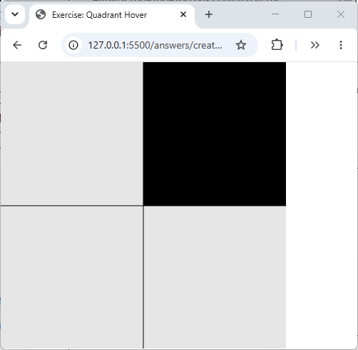
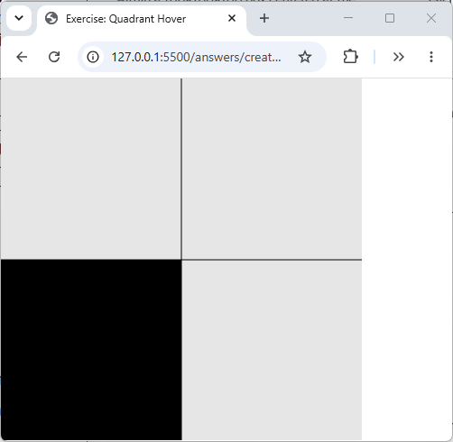
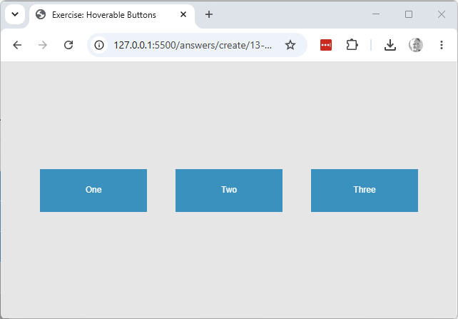
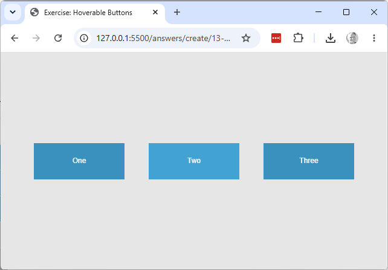
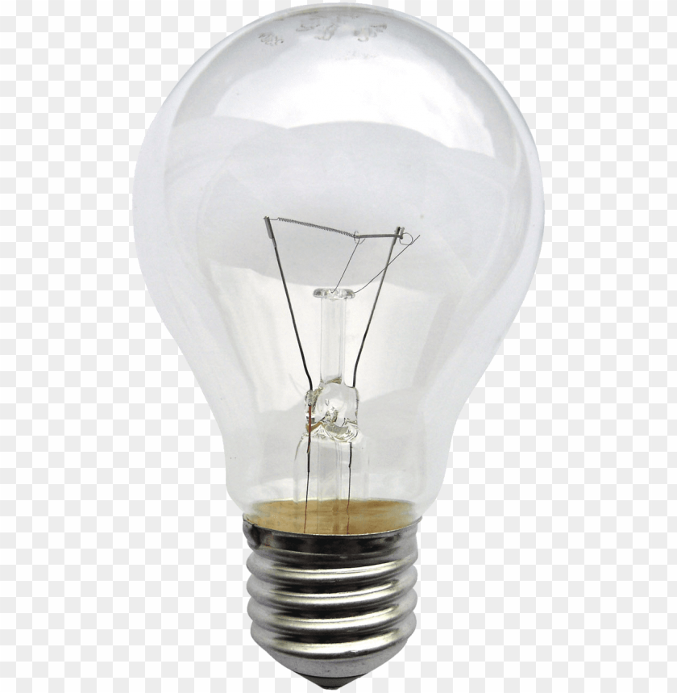
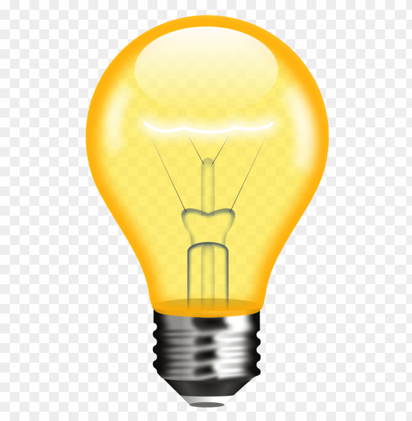

Explore & create
Three more brand-new sketches, each built from a blank starter rather than editing the sketch above — one applies this sketch's boolean/branching ideas to mouse position instead of ball edges, one pairs a hover check with a class of its own, and one contrasts a recomputed boolean with one that's simply held.
- Quadrant hover. Working copy:
exercises/create/13-quadrant-hover/. Create a 400×400 canvas, and draw a horizontal line and a vertical line dividing it into four equally sized quadrants. Each frame, check which quadrant (if any) the mouse is over, and draw a black rectangle filling exactly that quadrant; every quadrant the mouse isn't over should stay clear. The four checks are boolean comparisons againstmouseX/mouseY, combined with&&exactly as exercise 4 above combines two edge checks into a corner check.


- Hoverable buttons. Working copy:
exercises/create/13-button-hover/. Create aButtonclass withx,y,width,height,colorandlabelproperties and adisplay()method. Use it to build three non-overlapping buttons with different labels, all starting out colouredrgb(31, 144, 187). Each frame, check whether the mouse is over a given button — comparingmouseX/mouseYagainst itsx/y/width/height, the same rectangle test the Frogger capstone below needs for player/car collision — and while it is, display that button inrgb(35, 161, 209)instead of its usual colour.


- Light switch. Working copy:
exercises/create/13-toggle-switch/. Declare a global boolean variableisOn, startingfalse. Each time the mouse is pressed, flip it (isOn = !isOn). Indraw(), display one image whenisOnistrueand the other when it'sfalse(both are already in the working copy folder). Unlike exercise 5 above, whereisHoveredis recomputed from adist()comparison every single frame,isOnhere is set once by the click and simply held, unchanged, until the next click flips it again — the other common shape boolean state takes.
Hint: look up image() in the p5 reference, along with loadImage() and preload(),
which go together with it — an image has to be loaded once, in preload() (which p5 calls
before setup()), before image() can draw it every frame in draw().

